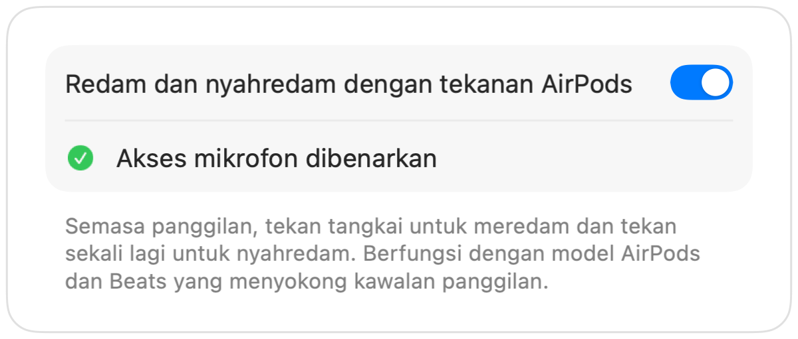

Tekanan redam AirPods tidak berfungsi pada Mac? Ini penyelesaiannya
macOS membolehkan anda meredam panggilan dengan menekan tangkai AirPods, tetapi hanya jika aplikasi panggilan menyokongnya. Banyak yang tidak menyokong, termasuk Chrome dan panggilan web di dalamnya. Anda menekan, mendengar bunyi ralat pendek, melihat mesej “Cannot Control Mic”, dan panggilan masih mendengar suara anda.
Muffle menambah sokongan itu kepada semua aplikasi. Ia menerima tekanan tersebut, meredam mikrofon Mac anda dan memainkan bunyi redam biasa.
Jadikan tekanan AirPods meredam mana-mana aplikasi
- 1
Pasang Muffle dan benarkan akses mikrofon. macOS hanya menghantar tekanan kepada aplikasi yang boleh menggunakan mik.
- 2
Pastikan “Redam dan nyahredam dengan tekanan AirPods” dihidupkan dalam Tetapan Muffle.
- 3
Sertai panggilan. Tekanan hanya meredam semasa aplikasi sedang menggunakan mikrofon.
- 4
Tekan tangkai sekali untuk meredam dan tekan sekali lagi untuk nyahredam.

- Di luar waktu panggilan, tekanan tersebut tetap memainkan dan menjeda muzik seperti biasa.
- Jika AirPods anda menggunakan tekanan berbeza untuk kawalan panggilan, semak tetapan AirPods anda dalam Tetapan Sistem.
Soalan lazim
Mengapa Mac saya memainkan bunyi ralat apabila saya menekan AirPods?
Aplikasi panggilan yang anda gunakan tidak menyokong tekanan redam AirPods, jadi macOS menolaknya. Dengan menjalankan Muffle, tekanan tersebut akan meredam mik anda.
Model AirPods manakah yang menyokong tekanan redam?
AirPods Pro, AirPods 3 dan lebih baharu, serta AirPods Max, termasuk model Beats yang mempunyai kawalan panggilan.